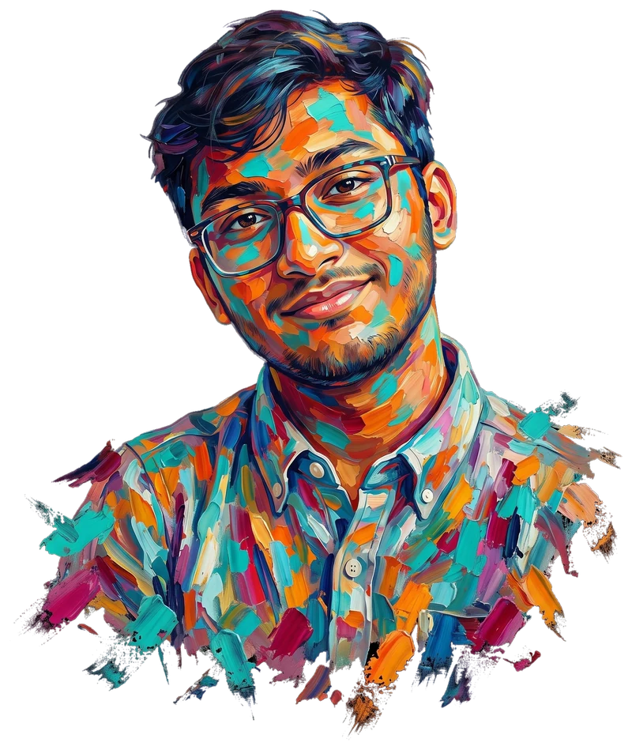

Artist statement.

I have always been drawn to what lies beyond the familiar. Growing up in Bangladesh, I developed a curiosity that rarely allowed me to settle into one way of seeing or understanding the world. That curiosity continues to shape my artistic practice, where I explore the relationships between observation, memory, imagination, and the structures that surround us.
Painting remains at the center of my work, but my practice extends into photography, digital media, and interactive experiences. I am interested in how an image can move beyond representation, becoming a space for interpretation, emotion, and discovery. Sometimes this begins with an ordinary moment, a landscape, or a familiar object. Other times, it emerges from an abstract idea that I cannot fully articulate until I begin making something.
My background in mathematics influences how I approach composition, proportion, pattern, and spatial relationships. Yet I am equally interested in what resists calculation: intuition, ambiguity, and the imperfections that give an artwork its character.
I have never been particularly comfortable with the familiar simply because it is familiar.
For me, making art is an act of questioning my own limitations, moving between disciplines, and finding new ways to give form to things that are difficult to express otherwise.